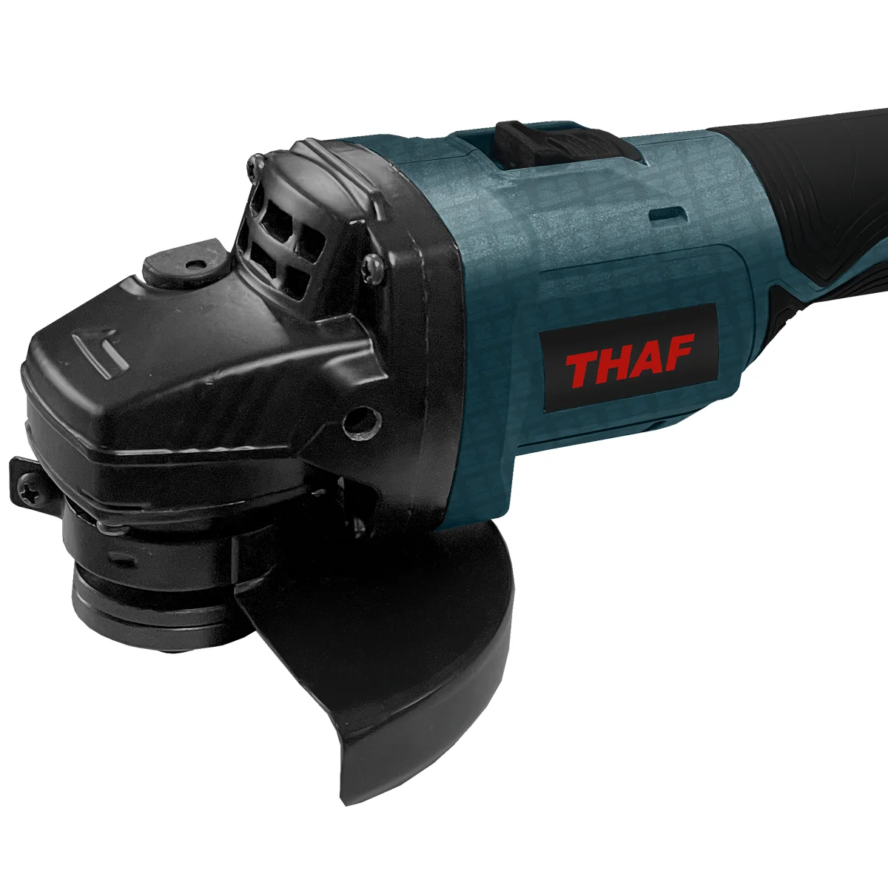
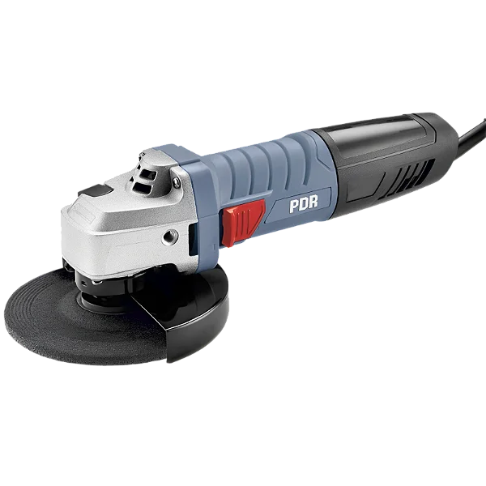
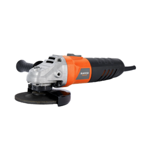
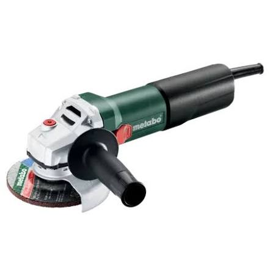
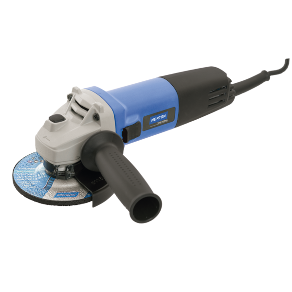

Esmerilhadeira Bosch
Referência mundial em esmerilhadeiras. Destaca-se pela altíssima durabilidade, motor potente com
proteção contra poeira e recursos avançados de segurança

Esmerilhadeira THAF
Oferece estrutura simples e preço bem acessível, sendo voltadas para trabalhos hobby, pequenos
reparos domésticos ou usos ocasionais que não exijam uso contínuo severo.

Esmerilhadeira Kress
De uma marca alemã tradicional focada no segmento profissional e industrial. Suas esmerilhadeiras se
destacam pela excelente ergonomia, durabilidade e rendimento em trabalhos contínuos.

Esmerilhadeira Wap
Foca no "Faça Você Mesmo". Suas esmerilhadeiras oferecem design funcional, bom conforto no manuseio e
preço acessível, sendo ideais para pequenos cortes, desbastes leves e reformas em casa.

Esmerilhadeira PDR
A PDR tem esmerilhadeiras movidas a ar comprimido. Destacam-se por serem muito leves,
compactas e ideais para oficinas mecânicas, funilarias e linhas de montagem.

Esmerilhadeira RAYCO
Esmerilhadeiras que oferece soluções simples, funcionais e com preço bem competitivo, sendo
indicadas para serviços leves, pequenos reparos e tarefas ocasionais em casa.

Esmerilhadeira DeWalt
Referência no segmento profissional e industrial pesado. Suas esmerilhadeiras oferecem robustez
extrema, motores potentes com altíssima durabilidade e excelentes sistemas de segurança.

Esmerilhadeira Milwaukee
A Milwaukee é referência máxima em inovação e alta performance, especialmente na linha a bateria.
Suas esmerilhadeiras entregam potência equivalente ou superior às com fio e proteção avançada.

Esmerilhadeira Metabo
Destaca-se pelo foco extremo em segurança (embreagem mecânica de segurança S-automatic),
alta resistência a poeira de alvenaria/metal e durabilidade imbatível para uso industrial severo.

Esmerilhadeira DCK
Oferecem construção robusta, boa potência e durabilidade, entregando um desempenho confiável
com um custo menor que o das marcas tradicionais.

Esmerilhadeira NORTON
Destaca-se pelo bom equilíbrio, durabilidade do motor e ótimo desempenho no uso combinado com os
próprios abrasivos da marca.

Esmerilhadeira Makita
A Makita é lendária! Destaca-se pelo motor resistente, ergonomia
e sistema de segurança a contragolpes e a engrenagem. É a queridinha!